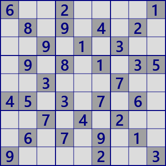
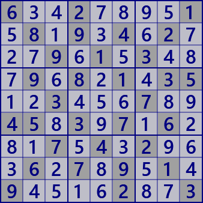

ここでは数独の解析アルゴリズムを解説します。

数独は、紙と鉛筆で遊ぶもので、私も趣味として楽しんでいます。
鉛筆と知力だけで解き、全ての数字が埋まったときの達成感は格別です。
しかし、ここで扱うのはヒトが鉛筆と知力で数独を解くことの解説ではありません。
C#プログラムで数独を解くことを目的とします。
これも、また別の数独の楽しみ方です。
この問題は、ヒトが鉛筆と知力だけで解くのは極めて困難だと思います。腕自慢の上級の方も試みない方がよいでしょう。身のためです。これはプログラムで扱う問題です。
6..2....1 .8.9.4.2. ..9.1.3.. .9.8.1.35 ..3...7.. 45.3.7.6. ..7.4.2.. .6.7.9.1. 9....2..3
解き方のルール

”数独の行・列・ブロック毎に1-9の数字を入れる”というルールは同じです。
プログラムで数独を解く場合の、解き方にルールを設けます。
”あるセルに数字を入れてみて失敗したらその数字は偽である” のいわゆる背理法は禁じます。
これを認めるのは「サル・・・」と同じで、何ら知的でなく、つまらないではないですか。
このサイトで扱うのは、論理的に解くアルゴリズムです。なお、これはローカルルールです。
異なる意見があることは承知しています。
左上の数独の解(数字配列) はこの通りです。でも、それはここでのルールの解ではありません。
解を求める論理的な説明が必要です。
▽次のステップへ
本サイトで解説するアルゴリズムは、 アルゴリズムリスト にあります。
数独解析アルゴリズムを理解し、それなりのコードを補えば数独を解くプログラムは組み立てられます。
また、数独を解く・数独問題を作る C#プログラム GNPX のソースコードを公開しています。
本サイトの解説とGNPXのコードは（ほぼ）対応しています。ダウンロードして、参考にしてください。
ただ、GNPX のコードは、バグフィックス、改良、単なる気分で、(しばしば) 変更します。継続性の保証はありません。
従って（ほぼ）対応しています。
一番良いのは、ご自身のコードを作ることです。
なにより自分流を貫くことが、発展形のアルゴリズムを開発し、組み込むうえでもよいでしょう。